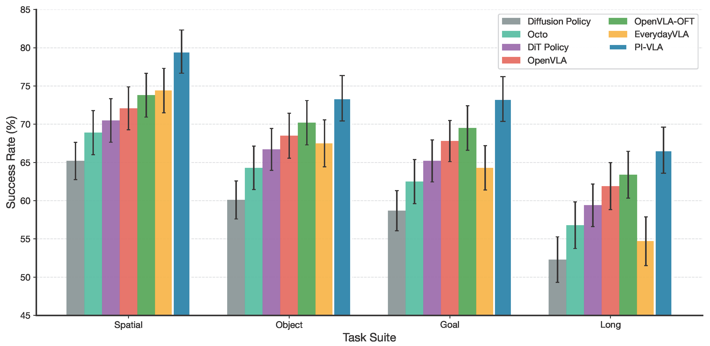

LIBERO
Four task suites examine spatial, object, goal, and long-horizon variation. The reported protocol uses 50 demonstrations per task and 50 evaluation episodes per task, with 500 evaluation episodes per suite.
Vision–language–action · Predictive control · 2026
Adaptive Symmetry-Aware Decision-Making for Long-Horizon Vision–Language–Action Manipulation
PI-VLA studies how a robot can predict an action sequence, monitor whether its predictions remain consistent with execution, and replan when they diverge. As first author, I contributed to methodology, validation, research investigation, and the original manuscript of this collaborative work.

01 · Research question
Action chunks let a robot plan several movements at once. Over a longer task, small discrepancies between intended and observed motion can accumulate: a grasp shifts, an object responds differently, or a visual disturbance makes the next movement less reliable.
PI-VLA asks how a policy can use both its own predictions and the feedback from execution to decide when to continue and when to reconsider. The goal is to maintain consistent behavior under changes that preserve the task, while responding when the expected action–state relationship breaks down.
Can action disagreement and prediction error tell a robot when to shorten its commitment and replan?
In this work, “symmetry” describes consistency under task-preserving transformations and across action representations. The operational mechanism is explicit: compare discrete and continuous action predictions, check predicted state features against new observations, and regulate execution depth.
02 · The method
The framework couples a Cognitive–Motor Synergy (CMS) module with an Active Uncertainty-Resolving Decider (AURD). Prediction and execution remain connected through a shared vision–language representation and feedback from the environment.
CMS processes an RGB observation and a language instruction through the vision–language backbone. Parallel heads produce discrete action tokens and continuous action chunks, alongside future-state features and value estimates.
The two action outputs offer a consistency check: after de-quantization, they can be compared in the same action space.
The training objective combines imitation, reinforcement learning, and state prediction. Imitation anchors both action heads to demonstrations; the reinforcement term supports longer-term returns; state prediction aligns expected future features with observations.
The predictive target uses a fixed DINOv2 feature encoder. This gives execution feedback a representation in which expected and observed consequences can be compared.
AURD combines action-head disagreement with the error between predicted and observed state features. A high signal triggers replanning; elevated uncertainty combined with a low value estimate shortens the current sequence.
03 · Closed-loop execution
Prediction error becomes available after an action has produced a new observation. AURD therefore operates in a receding-horizon loop: execute a step, compare the outcome with the prediction, and decide how much of the remaining chunk to retain.
This is the execution logic in Section 3.5 and Algorithm 1. The nominal horizon is five steps; the published uncertainty thresholds are 0.15 and 0.35, with a value threshold of 0.3.
Here, interaction is the feedback loop between the policy and the physical environment. The study evaluates adaptive robot execution.
04 · Experimental setting
Four task suites examine spatial, object, goal, and long-horizon variation. The reported protocol uses 50 demonstrations per task and 50 evaluation episodes per task, with 500 evaluation episodes per suite.
The collaborative study uses a low-cost 6-DOF arm and a dataset of 1,200 demonstrated task executions pairing language, RGB sequences, and end-effector poses. Physical evaluation uses 20 trials per condition.
The reported implementation builds on OpenVLA/OpenVLA-OFT with LoRA fine-tuning. Training combines a simulation stage with subsequent physical-data fine-tuning. The physical platform runs the policy on external compute and low-level motor control through an Arduino serial interface.
The physical results below belong to the collaborative PI-VLA study. My separate Arm-200 coffee workstation is an ongoing project.
05 · Experimental results
The paper reports task success in three complementary settings. Select a setting to see its numerical results and what the comparison tests.
Simulation · Table 2

PI-VLA reaches 79.5% on Spatial, 73.4% on Object, 73.3% on Goal, and 66.6% on Long. The comparison shows the combined framework’s behavior across different task variations under the paper’s training and evaluation protocol.
| Method | Spatial | Object | Goal | Long | Reported overall |
|---|---|---|---|---|---|
| Diffusion Policy | 65.2 | 60.1 | 58.7 | 52.3 | 59.1 |
| Octo | 68.9 | 64.3 | 62.5 | 56.8 | 63.1 |
| DiT Policy | 70.5 | 66.7 | 65.2 | 59.4 | 65.5 |
| OpenVLA | 72.1 | 68.5 | 67.8 | 61.9 | 67.6 |
| OpenVLA-OFT | 73.8 | 70.2 | 69.5 | 63.4 | 69.2 |
| EverydayVLA | 74.4 | 67.5 | 64.3 | 54.7 | 65.2 |
| PI-VLA | 79.5 | 73.4 | 73.3 | 66.6 | 73.2 |
Physical evaluation · Table 3
The in-distribution test crosses three objects—block, ball, and rock—with three instruction directions: away, left, and right. The published overall result is 88.3%, compared with 82.2% for EverydayVLA and 70.0% for OpenVLA-OFT.
In-distribution success · 0–100%
| Object | Away | Left | Right |
|---|---|---|---|
| Block | 95 | 90 | 85 |
| Ball | 95 | 90 | 85 |
| Rock | 90 | 85 | 80 |
Values are transcribed from published Table 3. Each condition uses 20 physical trials in the reported protocol.
| Object / direction | OpenVLA | OpenVLA-OFT | EverydayVLA | PI-VLA |
|---|---|---|---|---|
| Block · Away | 80 | 85 | 90 | 95 |
| Block · Left | 45 | 60 | 80 | 90 |
| Block · Right | 50 | 65 | 75 | 85 |
| Ball · Away | 75 | 80 | 90 | 95 |
| Ball · Left | 60 | 65 | 85 | 90 |
| Ball · Right | 70 | 75 | 80 | 85 |
| Rock · Away | 70 | 75 | 85 | 90 |
| Rock · Left | 50 | 60 | 80 | 85 |
| Rock · Right | 55 | 65 | 75 | 80 |
Distribution shift · Table 4
These tests examine unseen tasks, unseen environments, and static or dynamic visual distractions. They are reported separately from the 88.3% in-distribution physical result.
| Method | Unseen tasks | Unseen environments | Static distractions | Dynamic distractions |
|---|---|---|---|---|
| OpenVLA | 55.2 | 58.7 | 50.1 | 45.3 |
| OpenVLA-OFT | 60.5 | 63.4 | 55.8 | 50.2 |
| EverydayVLA | 65.8 | 68.9 | 64.2 | 63.5 |
| PI-VLA | 72.4 | 75.1 | 71.8 | 70.1 |
PI-VLA reaches 70.1% under dynamic distractions versus 63.5% for EverydayVLA, and 75.1% in unseen environments versus 68.9%. The comparisons support the use of prediction and adaptive execution in the tested distribution-shift settings.
06 · Component analysis
The component studies separate the dual action heads, training terms, and AURD. On LIBERO Spatial, replacing AURD with a fixed five-step horizon lowers success from 79.5% to 74.1%, a 5.4 percentage-point difference.
| Method | Spatial | Object | Goal | Long |
|---|---|---|---|---|
| PI-VLA · full | 79.5 | 73.4 | 73.3 | 66.6 |
| Discrete head only | 75.3 | 69.8 | 69.1 | 62.4 |
| Continuous head only | 73.9 | 68.2 | 67.5 | 60.8 |
| Without state prediction loss | 76.8 | 71.0 | 70.2 | 63.5 |
| Without reinforcement loss | 78.2 | 72.1 | 71.8 | 64.9 |
| Without AURD | 74.1 | 68.5 | 68.0 | 61.2 |
The full model also exceeds either single-head variant. Removing the state-prediction or reinforcement term reduces success across the four suites, linking the empirical result to both prediction and the training objective.
These experiments motivate a practical design choice: use action chunks for efficient prediction, while retaining an explicit way to interrupt them when execution no longer matches the model’s expectation.
The values above are reported success rates, without reconstructed error bars. Full training, uncertainty, sensitivity, and horizon analyses are available in the published paper.
07 · My contribution
I am the first author. The published contribution statement credits my work in methodology, validation, investigation, and original-draft preparation.
Contributed to the methodological development of predictive action generation and uncertainty-aware execution within the PI-VLA framework.
Contributed to validating the framework and its experimental findings as part of the collaborative study.
Investigated how action consistency, predicted consequences, and execution feedback can inform adaptive manipulation.
Co-prepared the original draft explaining the research motivation, method, and experimental results.
This was a collaboration with Di Tian, Xuan-Jing Chen, Zhen-Yuan Wei, Chen-Wei Liang, and Mu-Jiang-Shan Wang. The paper’s author-contribution statement gives the full allocation of team responsibilities.
08 · Research connection
PI-VLA connects action prediction with the decision to replan. It motivates a question I continue to study: once a mismatch is detected, what additional evidence would tell the robot which assumption needs to change?
My work on Seeing What Matters studies the selection of command-relevant visual evidence. My Arm-200 coffee workstation brings calibration, perception, control, and testing into a physical setting. Together, these projects shape my broader interest in systems that predict, observe, and adapt through execution.
Numerical summaries follow the published Tables 2–4 and 8. Architecture and LIBERO images are the original Figures 2–3 from Jian et al., Symmetry 2026, 18(3), 394. The article’s data-availability statement describes access conditions for the research dataset.